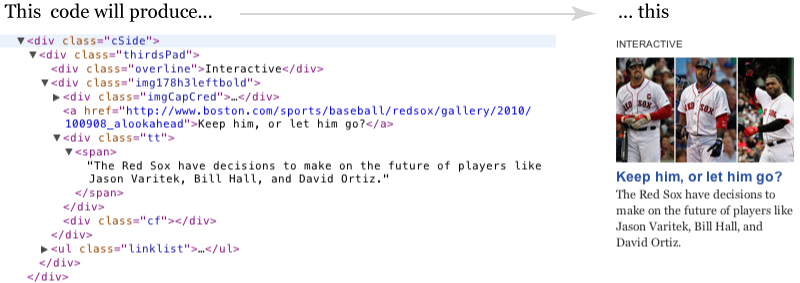

What is the difference between Web browsers, Web servers, and websites? What is HTML, CSS, JavaScript, Flash, FTP, XML, RSS, blogs, CMS, and SEO?
Daigo Fujiwara, Infographics Artist at The Boston Globe/Boston.com, will explain the basics of how the Internet works and common terms and jargon that are used when discussing the Internet. Attendees will create a simple HTML Web page using a simple text-editing software (such as TextWrangler on Mac or NotePad++ on PC).
The class will include a Q&A session--please bring those questions you've been afraid to ask.
The Internet is a global system of interconnected computer networks.
The most common tool the people use on the Internet is a web browser, such as Internet Explorer, FireFox, Safari, or Chrome. (See whatbrowser.org).
Web browsers work by connecting over the Internet to a remote computer (web server, identified by Uniform Resource Locators - URL), requesting specific documents, downloading them and formatting them for you to view.
Again, web browsers work by connecting over the Internet to a web server, requesting specific documents, downloading them and formatting them for you to view.
While web documents can conceivably be in any format, HTML (.html) is the most widely used document format on the web.
Other familiar file formats include .jpg or .gif for images, .mp3 for music, or .pdf for downloadable documents.
Hyper Text Markup Language, HTML, is the language that encodes "World Wide Web" documents. The basic syntax and semantics of HTML are defined by the HTML standards, which is maintained by a group called World Wide Web Consortium (W3C)
Every HTML element consists of a "tag" name, sometimes followed by an optional list of attributes, all placed between opening and closing brackets (< and >)
A HTML file is a text file. You can view the code of any website by selecting View Source in the browser.
Example: 
So, for this example div is the "tag" name and class is attributes
Tip: While html is a static document, server side programing (such as php, asp etc. ) on a web server can write documents on the fly. But the end results are the same, it is still a text file with html code on it.
<h1>This is a large heading</h1> <h2>This is a smaller heading</h2>
<p>This is a paragraph.</p> <p>This is another paragraph.</p>
<a href="http://www.boston.com">This is a link</a>
<img src="myphoto.jpg" width="104" height="142" />
Good reference and tutorials: www.w3schools.com
Cascading Style Sheets set the rules for the HTML's display -- such as position, size, backgrounds, fonts, colors, etc. It formats the otherwise plain html into beautiful (designed) websites.
CSS can be embedded into html, or exist on a separate text file, and simple CSS code looks like this:
.headlineblue {
color: blue;
font-style: italic;
font-size: 30px;
}JavaScript is a programing language embedded directly into HTML documents, that is understood by the web browser. It allows executable content on the web pages, adding interactivity.
Simple JS code looks like this: <input type="button" value="Click me!"
onClick="alert('You have clicked my click-me button.');">
Tip: Syntax: special characters such as ; ( ) { } . " : always means something. For example, ; always indicate that it is the end of statement. Be careful with single and double quotes.
Adobe Flash is a multimedia creation (authoring) tool currently developed and distributed by Adobe Systems.
A "Flash movie" can display text, shapes, simple animation, video, and sound. It is one of the tools that is also used to create Rich Internet Application (RIA).
You need to have Flash Player, a plug-in for your browser, installed on your computer to view Flash contents.
Flash has its own programing language called ActionScript, which is similar to JavaScript.
The language, (or protocol) used for web transaction is Hypertext Transfer Protocol, what you see in http://www.boston.com. The web servers are running as HTTP servers. Web browsers are, technically, HTTP clients.
In a same way, a server can be running File Transfer Protocol, FTP, and by using a FTP client, you can access the server.
Typically, FTP server requires a username and a password. You can use FTP to "put" files on the web server, this is how you can allow the world to view what you wrote.
Extensible Markup Language, XML, is a meta-language that allows you to create and format your own document markups. XML is similar to HTML in that tag and attributes are contained between opening and closing brackets (< and >).
But unlike HTML, there are no "correct" tags for an XML document, except those you define yourself. XML are also less forgiving (tags must be closed, attribute values must be in quotation marks, etc.)
Since you can define your own XML tags, it is very powerful for storing complicated data, while still being somewhat readable by humans. Like this from NYTimes Congress API:
<housemember> <first_name>Barney</first_name> <last_name>Frank</last_name> <party>Dem</party> <state>MA</state> <seniority>30</seniority> <next_election>2010</next_election> <district>4</district> <missed_votes_pct>4.83</missed_votes_pct> <votes_with_party_pct>96.96</votes_with_party_pct> </housemember>
But the problem with XML is there is no use for it unless you program an interpreter yourself.
A good example of useful XML is RSS.
RSS (Rich Site Summary, or Real Simple Syndication) is a widely used format for delivering regularly changing web content. Many news-related sites, blogs and other online publishers syndicate their content as an RSS Feed to whoever wants it.
Using RSS Feed Readers and News Aggregators, you can read, redistribute, organize, and sort/search many news source at once.
Originally, a blog (which came from the term "web log") is a type of website, usually maintained by an individual with regular entries or web journals. But the term has evolved into "how" to update a website, rather than "what."
Blog engines, or blog software (such as WordPress, Movable Type, TypePad, or Blogger, to name a few) give writers an easier and quicker way to update the websites over a web browser, therefore eliminating the need to use FTP or web editing tools. Those software also help each "blog post" to be sorted by date, category or type, and automatically produce RSS for you.
Content Management System is a software system which provides website authoring and administration tools designed to allow users to create and manage the site's content with relative ease.
Blog engines/softwares are a form of CMS.
Like blog engines, you can use CMS over a web browser, and at the end, it produces html files for a website.
Search Engine Optimization is the process of improving ranking in search engine results.(like Google, Bing, Yahoo). Some tips:
As I said every webpage is just a text file. By reading the html source of the page, you can deconstruct any web site. To view the html source of web page:
View > Page Source (Or Ctrl+U on PC or Command-U on Mac)Page > View Source Page > Developer > View Source (or Ctrl+U)View > View Source (or command-Option-U)This slide can be found at: http://daigofujiwara.com/files/cww11/